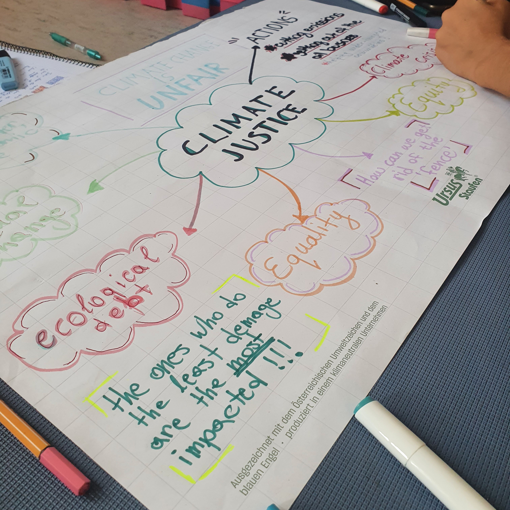

UWC short course “Building a Sustainable Future” 2022
During the BASF short course, I had the chance to learn about the social, economic and ecological aspects of sustainability and the interconnectedness between them, thus providing a well-rounded idea of how different sustainability issues impact each of these areas and what solutions are needed to solve them. Topics discussed included causes, impacts and possible solutions to climate change and global warming, natural resources depletion, linear vs circular economy, biodiversity loss and natural habitat restoration, pollution, recycling, composting, renewable energy, human rights and the unequal impact of environmental issues on different communities…

The course provided various angles from which to look at what actions can be taken: what can be done on an individual, regional and world-scale, or how may the average person, a scientist or a lawmaker tackle these issues. This was done through lectures, workshops, individual and group projects and site visits. One of them was the visit of a community garden where we had the opportunity to hear about the agricultural practices and composting techniques used, as well as to get a glimpse of the organization and sharing or responsibilities and resources between the group.
Individual projects
We each had the opportunity to research a topic of interest and present it, I dove deeper into the negative effects of the fast-fashion industry: the LCA of different natural and synthetic textiles, the pollution of water and soil by processing and coloring fabrics, the exploitation of sweatshop workers, where do unwanted clothes end up. As a small-scale solution I organized an event where the participants could bring a piece of unwanted or damaged clothing and swap, paint or embroider it to increase its lifespan. The event was successful and many of the participants and facillitators of the course took part in the exchange and upcycling, some of the creations can be seen in the photo on the left.